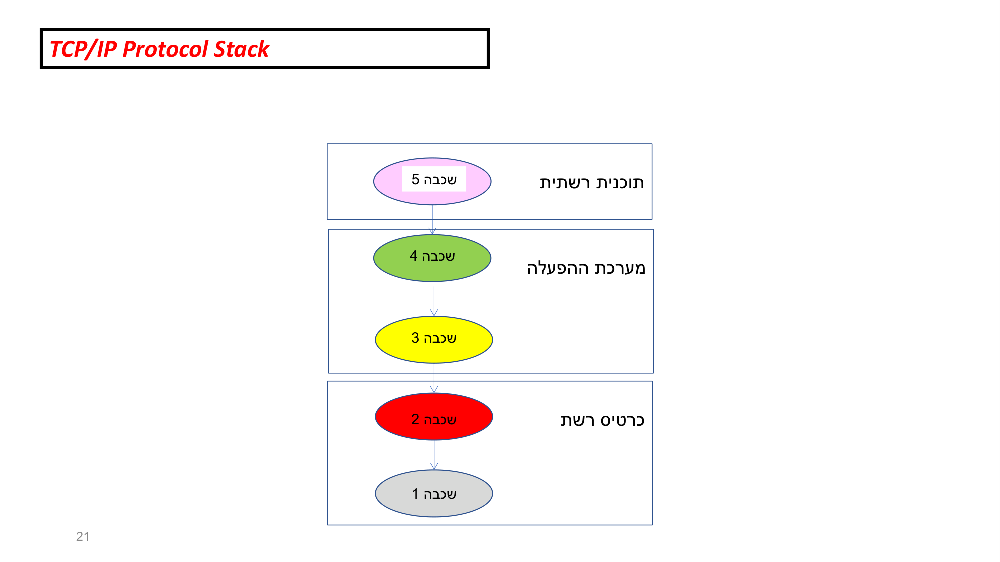
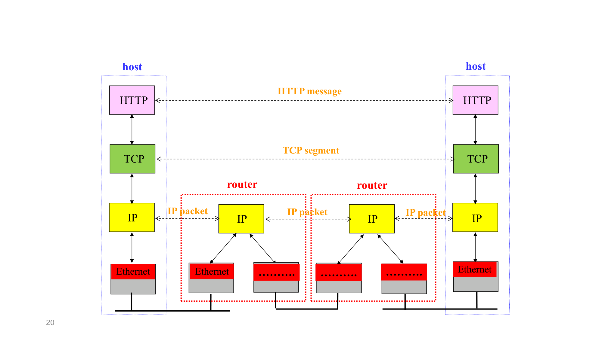
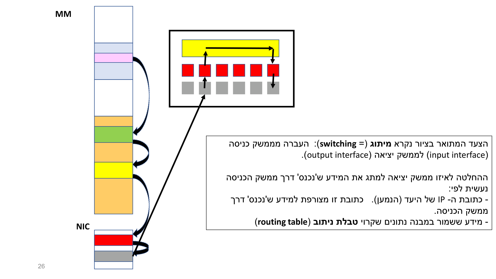

שכבת היישום (Application layer)
⏱ זמן משוער: 30 דק'
על מה מדבר האשכול הזה
כמתכנת, סביר שכבר כתבת קוד ש"מדבר" עם שרת — פתחת דף, שלחת בקשה, קיבלת תשובה. באשכול הזה אנחנו מתחילים מלמעלה, מהשכבה שהקוד שלך יושב בה בפועל: שכבת היישום (application layer). זו השכבה של האפליקציות הרשתיות — browser, Zoom, Waze — ולא של החוטים או של החומרה שמתחת.
חשוב לדעת מראש: כל התוכן כאן מבוסס על מצגת אחת בלבד — L02 (4).pdf (26 שקפים). המרצה מציג את שכבת היישום דרך מבט-על על מחסנית ה-TCP/IP, ולא כ-deep-dive. לכן כאן נלמד את המושגים והגבולות: מהי אפליקציה רשתית, מהו פרוטוקול, ומהו מקומה של שכבה 5 במחסנית. ה-deep-dive על HTTP, על ה-API ועל ה-sockets מגיע במודולים הבאים.
🎓 הרחבה — מוסכמות הסימון של המרצה (כדאי להכיר)
לאורך כל השקפים המרצה משתמש בסימונים קבועים משלו:
- [= ...] — המקבילה האנגלית/הרשמית למונח עברי. למשל "קישור [= connection]".
- { } — הבהרה/הסתייגות בתוך משפט. למשל "הגרעין {kernel}".
- ' ' — שימוש לא-פורמלי/מטפורי. למשל "'הקופסא השחורה'", "'מתמקד'".
- קיצורים הפוכים מהמקובל: המרצה כותב DTA [= Digital To Analog] ו- ATD [= Analog To Digital] (בספרות המקובל הוא DAC/ADC).
- טעות כתיב חוזרת: בשקפים 18–19 כתוב שהפרוטוקולים אופיינו ע"י IETT — הכוונה ל-IETF.
מקור: L02 (4).pdf, שקפים 2, 18–19
מיקוד הקורס — רק client-server
התחום של רשתות תקשורת מודרניות הוא רחב ומסובך מאוד — אי אפשר לתאר אותו בקורס יחיד, ובטח לא בקורס מבוא {קורס ראשון} כמו שלנו. לכן, אומר המרצה, חייבים מיקוד!!! וה"מיקוד" של הקורס נקבע כך:
- רשתות בשימוש של משתמשים אנושיים — לא IoT וכו'.
- אפליקציות רשתיות שמספקות שירותים למשתמשים האנושיים.
- אפליקציות מ'סוג' client-server — לא peer-to-peer, וגם לא היברידיות.
מקור: L02 (4).pdf, שקפים 3–5
הדוגמה המרכזית: אתר הקורס (Moodle) כאפליקציית Web
הדוגמה ה'בולטת' שהמרצה בונה עליה הכול היא העבודה מול אתר הקורס, המנוהל ע"י מערכת Moodle. האפליקציה שמספקת את השירות הזה היא אפליקציה web-ית, שבה צד הלקוח ממומש 'על ידי' browser. זו נקודת העיגון: כל מושגי ה-URL/connection/HTTP נגזרים ממנה.
מהתיאור הזה המרצה מונה את המושגים הבאים, בדיוק בסדר הזה:
- URL
- Hostname
- קישור [= connection] — קישור TCP, לא קישור UDP. הקמת הקישור היא בין צד/תכנית הלקוח לבין צד/תכנית השרת.
- הודעה בקשה [= http request message]
- פרוטוקול תקשורת — אוסף חוקים מאוד מדויקים ומאוד קשיחים; HTTP הוא פורמט של הודעה לפי חוקים קשיחים.
- שליחת ההודעה: send()
מקור: L02 (4).pdf, שקפים 6–7
המושגים ה"נמוכים" יותר (רקע)
מיד אחרי מושגי היישום, המרצה מונה רשימת מושגים משכבות נמוכות יותר — לרקע בלבד, לא deep-dive:
- Packet ו-Packet Switching
- ערוץ תקשורת פיזי [= physical communication link/channel]
- NIC [= Network Interface Card] — כרטיס רשת.
- DTA [= Digital To Analog] ו-ATD [= Analog To Digital] (סימון המרצה)
- Carrier signal — ו'התקדמותו' 'בתוך' ערוץ התקשורת הפיזי.
🎓 הרחבה — מיתוג מנות (Packet Switching), לא נדרש למבחן
בשקפים 9–10 המרצה פותח נושא הרחבה בשם "מיתוג מנות". שקף 10 מסומן בסמל חומר הרחבה (כובע-סיום) ולכן אינו מחייב לבחינה. בפועל מדובר בהצעה לא-חובה (רק למי שרוצה) להעלות ל-chat את הפרומפטים שבאתר הקורס: פרומפט 'פתיחה', בצירוף פרומפט עם שאלות על packet switching ו- statistical multiplexing.
כלומר — הנושאים האלה מוזכרים כאן רק כתרגול-chatbot לא-מחייב. אין בשקפים אלה הסבר תוכני עליהם.
מקור: L02 (4).pdf, שקפים 8–10
מהו "פרוטוקול תקשורת"?
זו הגדרה מרכזית שהמרצה מדגיש בקו תחתון. פרוטוקול תקשורת הוא:
"אוסף של חוקים מאוד ברורים, מאוד מדויקים ומאוד קשיחים שמתארים את הכללים להעברת מידע בין שני צדדים ש'שייכים' לרשת תקשורת מחשבים."
התובנה שהמרצה בונה: פרוטוקולים קיימים בכל שכבה, בין שתי ישויות "עמיתות" (peer entities):
- שכבת יישום: בין צד לקוח לצד שרת של אפליקציה — חוקים שונים = פרוטוקולים שונים לאפליקציות שונות (טקסט, video/audio/voice stream, דפי web, דוא"ל, הרצה מרחוק, 'ניווט רחפן'...). "'הרבה' {מאוד} פרוטוקולים".
- שכבת תעבורה: בין TCP↔TCP, או בין UDP↔UDP.
- שכבת רשת: בין IP↔IP (מחשב↔ציוד תקשורת, ציוד↔ציוד, ציוד↔מחשב).
- שכבת קישור: בין 2 כרטיסי רשת המחוברים בערוץ קווי-חשמלי, אלחוטי, או קווי-אופטי.
מקור: L02 (4).pdf, שקפים 11–14
מחסנית ה-TCP/IP — עקרון השכבות
המרצה מציג את TCP/IP Protocol Stack כחמש שכבות, מלמעלה למטה (עם קוד הצבע שלו):
- שכבה 5 — Application (ורוד/מג'נטה)
- שכבה 4 — Transport (ירוק)
- שכבה 3 — Network (צהוב)
- שכבה 2 — Link (אדום)
- שכבה 1 — PHYsical (אפור)
ומתחת לדיאגרמה, עקרונות השכבות (ציטוט מדויק מהשקף, באנגלית):
- Each layer relies on services from layer below.
- Each layer exports services to layer above.
- Interface between layers defines interaction.
- Hides implementation details.
- Layers can change without disturbing other layers.
מקור: L02 (4).pdf, שקפים 15–16
שכבת היישום — ההגדרה המלאה
השכבה העליונה [= שכבה מס' 5] נקראת שכבת היישומים [= application layer]. היא 'כוללת את כל הפרוטוקולים שממומשים בתוך אפליקציות רשתיות'. כלומר היא כוללת:
- פרוטוקולים סטנדרטיים — HTTP, SMTP, POP3, IMAP, ftp, telnet, .. שאופיינו על ידי IETF [= Internet Engineering Task Force].
- פרוטוקולים לא-סטנדרטיים — אלו שממומשים ב-Zoom, ב-Waze וכו', שלא אופיינו ע"י IETF או ע"י גוף תקינה מוכר אחר.
מקור: L02 (4).pdf, שקף 17
שכבת התעבורה (רקע) — ולמה זה חשוב לך כמתכנת
השכבה 'שמתחתיה' (שכבה מס' 4) נקראת שכבת התעבורה [= transport layer], והמרצה מדגיש בה ניגוד חד: היא כוללת 2 פרוטוקולים בלבד (לעומת אלפים רבים בשכבה 5):
- TCP (= Transmission Control Protocol)
- UDP (= User Datagram Protocol)
שניהם סטנדרטיים (אופיינו ע"י IETF — בשקף כתוב בטעות "IETT").
ואיפה הם ממומשים? המרצה שואל ועונה במפורש:
- שניהם ממומשים בתכנה, אך לא בתוך אפליקציה רשתית.
- הם ממומשים 'בתוך' מערכת ההפעלה — 'בתוך' הגרעין {kernel} שלה.
- ההסבר: מערכת ההפעלה היא בעצמה תכנית, וחלק מהמימוש שלה כולל את TCP ואת UDP.
מקור: L02 (4).pdf, שקפים 18–19
מיפוי השכבות לחומרה — מי אחראי למה
הדיאגרמה המרכזית של המרצה (שקף 21, "TCP/IP Protocol Stack") מקבצת את 5 השכבות לפי היכן הן ממומשות בפועל: שכבה 5 בתוך "תוכנית רשתית", שכבות 4+3 בתוך "מערכת ההפעלה", ושכבות 2+1 בתוך "כרטיס רשת". השקפים 22–24 מראים שאותו מגדל שכבות עליון נשאר זהה בכל מכשיר, וההבדל היחיד הוא בתחתית (סוג ומספר כרטיסי הרשת).

🎓 הרחבה — וריאציות המיפוי לפי סוג מכשיר (שקפים 22–24)
- desktop (שקף 22): כרטיס רשת אחד.
- laptop (שקף 23): תוכנית לדוגמה Zoom; שני כרטיסי רשת — "כרטיס רשת קווי" ו-"כרטיס רשת אלחוטי".
- smartphone (שקף 24): תוכנית לדוגמה Zoom; מערכת ההפעלה "Android או IOS"; שני כרטיסים — "כרטיס רשת אלחוטי" ו-"כרטיס רשת סלולרי".
מקור: L02 (4).pdf, שקפים 21–24
דוגמאות מדריכות — לקרוא את הדיאגרמות של המרצה
שתי דיאגרמות של המרצה מכילות תובנות שכדאי לוודא שהבנת. פתור בראש ואז חשוף את הפתרון.

נתון: בדיאגרמת ה-End-to-End (שקף 20) יש שני hosts בקצוות ושני routers באמצע. ב-host יש מגדל של 4 קופסאות: HTTP → TCP → IP → Ethernet.
שאלה: כמה שכבות ואילו שכבות מכיל כל router?
פתרון: כל router מכיל רק את 2 השכבות התחתונות — קופסת IP מעל שתי קופסאות Ethernet. ל-router אין TCP ואין HTTP. המסקנה: HTTP ו-TCP הם end-to-end — הם קיימים רק בקצוות (ב-hosts). IP קיים בכל צומת (לכן התווית "IP packet" מופיעה בכל קטע: host↔router, router↔router, router↔host — שלוש פעמים).
שאלה: תאר את המסע של הודעת HTTP מה-host השמאלי ל-host הימני, לפי הדיאגרמה.
פתרון (hop-by-hop):
- ההודעה נוצרת למעלה ב-host השמאלי כ-HTTP message.
- יורדת ל-TCP והופכת ל-TCP segment.
- יורדת ל-IP והופכת ל-IP packet.
- יורדת ל-Ethernet ועוברת קפיצה-קפיצה דרך ה-routers.
- כל router מעבד רק עד שכבת IP ומעביר הלאה.
- ב-host הימני המידע עולה בחזרה במעלה המחסנית עד HTTP.
מסקנה: HTTP ו-TCP end-to-end; IP בכל צומת.

שאלה: בתוך switch, מנה נכנסת דרך ממשק כניסה (input interface). לפי מה מוחלט לאיזה ממשק יציאה (output interface) לשלוח אותה?
פתרון: הצעד נקרא מיתוג (switching). ההחלטה נעשית לפי שני דברים:
- כתובת ה-IP של היעד (הנמען) — מצורפת למידע שנכנס.
- מידע השמור בטבלת ניתוב (routing table).
מקור: L02 (4).pdf, שקפים 20, 25–26
בדיקה עצמית
לפי מספור השכבות של המרצה, איזו שכבה היא שכבת היישום (Application)?
איפה ממומשים TCP ו-UDP, לפי המרצה?
כמה פרוטוקולים כוללת שכבת התעבורה (שכבה 4), ומהו הניגוד שהמרצה מדגיש?
בדוגמת ה-Web של המרצה, איזה סוג קישור מוקם לצד השרת?
בדיאגרמת ה-End-to-End (שקף 20), אילו שכבות מכיל router?
אילו מהפרוטוקולים הבאים הם דוגמה לפרוטוקולי שכבת יישום לא-סטנדרטיים אצל המרצה?
הגדרה מדויקת של שכבת היישום — User-space, Syntax ו-Semantics
ההגדרה שנדרשת בתרגיל 2 מדייקת את מה שנאמר בהרצאה: שכבת היישום היא נקודת הממשק הישירה בין תוכנות המשתמש (User-space applications) לבין שירותי רשת התקשורת. תפקידה המרכזי הוא לאפשר לתוכנה אחת (במערכת קצה אחת) להחליף נתונים עם תוכנה אחרת (במערכת קצה מרוחקת).
בניגוד לשכבות התחתונות (העוסקות בהעברה פיזית או בניתוב), שכבת היישום עוסקת בסמנטיקה של המידע:
- Syntax (תחביר) — פורמט ההודעה: אילו שדות, באיזה סדר, בכמה בתים.
- Semantics (סמנטיקה) — משמעות ההודעה: כיצד לפרש כל שדה, מה לעשות עם התגובה.
בשכבה זו לא מתבצעת התערבות בחומרה; הפרוטוקולים מגדירים חוקים לוגיים בלבד — Syntax ו-Semantics — שעל שני הצדדים להסכים עליהם כדי ליצור אינטראקציה משמעותית.
מקור: תרגיל 2, שאלה 6
פרוטוקול סטנדרטי — מה זה RFC ולמה זה חשוב?
הגדרה מדויקת שנבחנת בתרגיל 2: פרוטוקול מוגדר כסטנדרטי אם האפיון שלו פורסם כ-RFC (Request for Comments) על ידי IETF. ה-RFC הוא מסמך ציבורי ופתוח המבטיח Interoperability — היכולת של מוצרים מיצרנים שונים לתקשר זה עם זה בלי תלות בספק ספציפי.
פרוטוקולים לא-סטנדרטיים נקראים גם Proprietary / Application-Specific: הם מפותחים על ידי חברה פרטית עבור האפליקציה שלה, ה-API נשמר סגור ואין RFC רשמי. דוגמאות: פרוטוקול Zoom, Telegram MTProto, פרוטוקול WhatsApp (מבוסס Signal, סגור ברובו), Apple iMessage Protocol.
דוגמאות מלאות — 10 סטנדרטיים ו-10 לא-סטנדרטיים (שאלה 7)
סטנדרטיים (RFC על ידי IETF):
- HTTP/HTTPS — web
- SMTP — שליחת דואר
- DNS — תרגום שמות
- FTP — העברת קבצים
- SSH — חיבור מרוחק מאובטח
- DHCP — הקצאת כתובות IP
- IMAP — קבלת דואר
- NTP — סנכרון זמן
- SNMP — ניהול רשת
- SIP — VoIP / וידאו
לא-סטנדרטיים (Proprietary):
- WhatsApp Protocol (Signal-based, mostly closed)
- Zoom Protocol
- Discord Protocol
- Spotify Connect
- Skype Protocol
- Telegram MTProto
- Steam Client Protocol
- Netflix Custom Streaming
- Apple iMessage Protocol
- Proprietary RPC of custom SaaS (SAP, Oracle binary protocols)
מקור: תרגיל 2, שאלה 7
שני היבטים של "פרוטוקול תקשורת": אפיון מול מימוש
שאלה 8 בתרגיל 2 מבחינה בין שני היבטים של כל פרוטוקול:
- אפיון (Specification / Protocol Definition) — מסמך טכני המתאר את הכללים, פורמט ההודעות, מצבי המכונה (State Machine) וסדר האירועים. זהו ה"חוזה" בין הצדדים — לרוב מתגלם כ-RFC.
- מימוש (Implementation) — הקוד (בשפה כמו C, C++ או Go) המיישם בפועל את האפיון בתוך מערכת הפעלה או אפליקציה. זהו ה"ביצוע".
מקור: תרגיל 2, שאלה 8
פרוטוקולי שכבה 5 ממומשים ב-User-space — חשיבות למהנדסי תוכנה
שאלה 9 בתרגיל 2 מדגישה: בניגוד לשכבה 4 (TCP/UDP שב-kernel) ולשכבות 1–2 (חומרה ב-NIC), פרוטוקולי שכבת היישום ממומשים כספריות תוכנה בתוך User-space. כאשר Chrome שולח בקשת HTTP, הוא משתמש בספרייה (כמו libcurl או מנוע פנימי) המבצעת Socket Programming מול מערכת ההפעלה. האפליקציה עצמה מכתיבה את לוגיקת הפרוטוקול.
למה זה חשוב לך כמהנדס תוכנה? (4 נימוקים מהפתרון)
- יכולת הרחבה וגמישות: כיוון שהכל תוכנה, ניתן לעדכן פרוטוקולים (למשל מ-HTTP/2 ל-HTTP/3) ללא החלפת חומרה.
- אחריות על הבאגים: כשאפליקציה מתנהגת לא כשורה ברשת, הבעיה עשויה להיות במימוש הפרוטוקול בתוך הקוד שלך — לא רק "ברשת".
- שליטה על ביצועים: הבנת המימוש מאפשרת אופטימיזציות — למשל Connection Pooling להקטנת עומס הרשת.
- עבודה עם API: המהנדס המודרני לא רק "משתמש" ברשת, אלא בונה את ה"פרוטוקול" שלו מעל TCP/UDP (למשל, מערכת מיקרו-שירותים). הבנה זו קריטית לתכנון מערכות מבוזרות.
מקור: תרגיל 2, שאלה 9